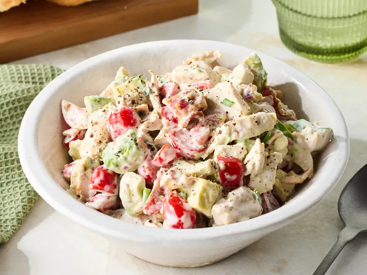

Home
BLT Chicken Salad

Description
This BLT chicken salad is definitely a chicken salad, but you get plenty of the B and T. Serve as a lettuce wrap on bibb lettuce, on white toast, or with bagel chips.
Ingridients
- 2/3 cup mayonnaise
- 1 pound mild country sausage
- 1/2 cup chopped green onions
- 1/3 cup buttermilk or sour cream
- 1/2 teaspoon freshly ground black pepper
- 3 1/2 cups chopped cooked chicken, or more to taste (from one rotisserie chicken)
- 1 1/2 cups grape tomatoes, quartered
\
- 8 strips bacon, crisp-cooked and crumbled
- 1 avocado - peeled, pitted, and chopped (optional)
Steps
- Gather all ingredients.
- Combine mayonnaise, green onions, buttermilk and pepper in a bowl.
- Add chicken, tomatoes, and bacon. Stir to combine.
- If using, fold in avocado just before serving.
- Serve immediately or cover and store in the refrigerator for up to 3 days.